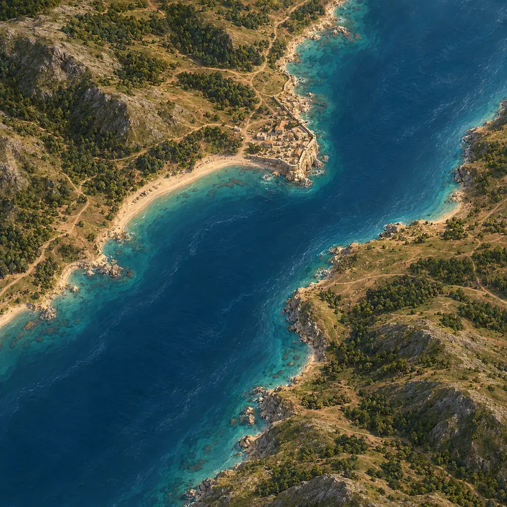
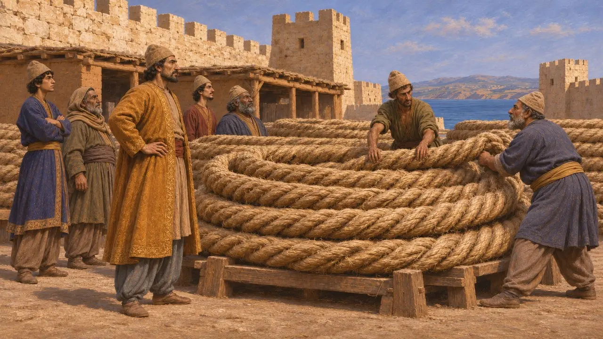
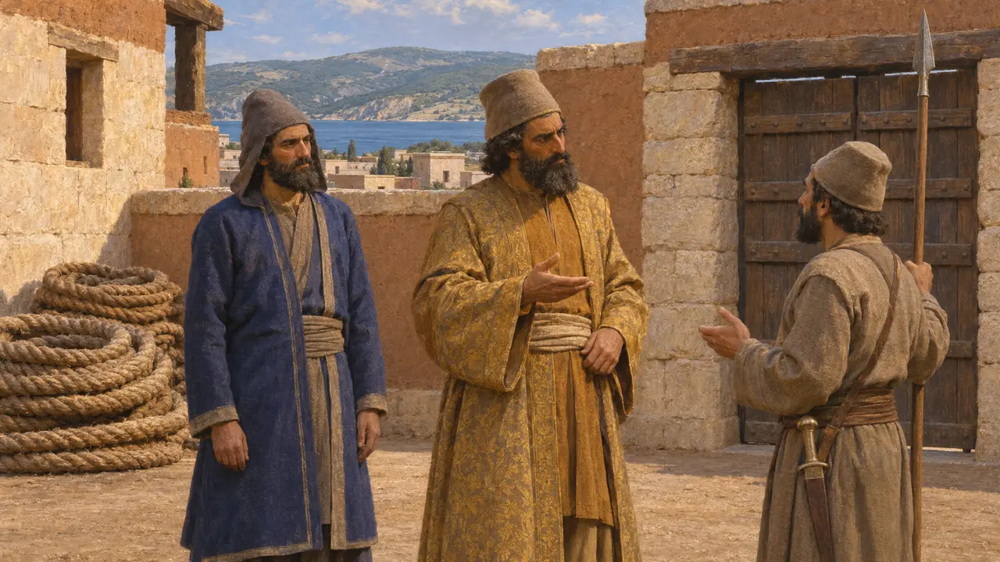
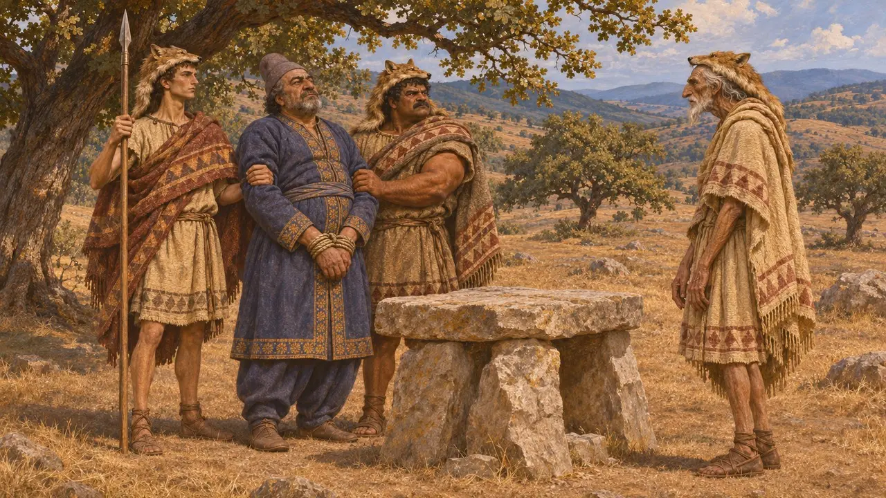
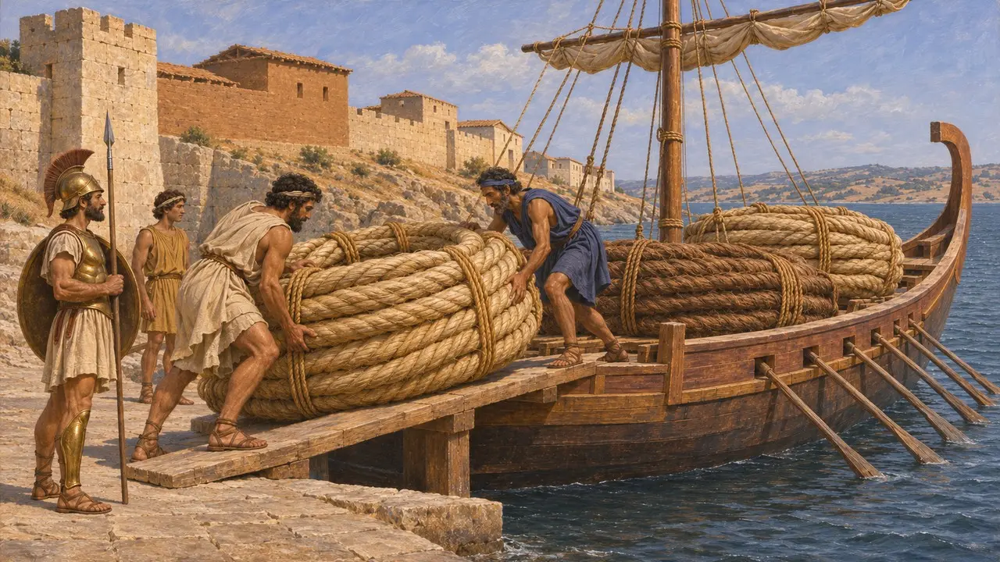
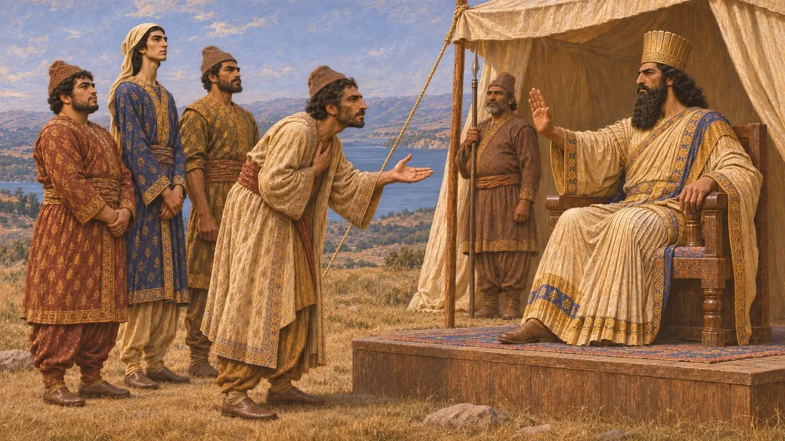

Oïobaze
Perse à Sestos en 479 av. J.-C., qui garda les câbles des ponts et mourut en Thrace
Oeobazus était un Perse établi à Sestos, sur l'Hellespont, lorsque les Grecs l'assiégèrent à l'automne et pendant l'hiver qui suivirent Platées. Hérodote est la principale source à son sujet : il le mentionne à propos des câbles des ponts de Xerxès et d'un sacrifice chez les Thraces. Il n'était pas le gouverneur de la ville ; c'était Artayctès.
Dans le jeu : Oïobaze n'apparaît que dans les articles d'événements sur le siège de Sestos et les ponts de l'Hellespont, et n'a pas de mécanique propre. Hérodote fait d'Artayctès le gouverneur de Sestos, et non d'Oïobaze.

Les câbles de Sestos
Récit antiqueHérodote dit que Sestos était la place la plus forte de l'Hellespont et que les Perses et leurs alliés s'y rassemblèrent lorsque la flotte grecque arriva après Mycale. Parmi eux se trouvait Œobaze, qui y avait apporté de Cardia les câbles des ponts. Ces câbles étaient les lourdes cordes qui avaient maintenu en place les ponts de Xerxès.
Herodotus 9.115

Gouverneur et compagnon
Récit antiqueSelon Hérodote, l'homme qui commandait à Sestos était Artayctès, gouverneur perse de la région. Oiobaze est nommé parmi ceux qui étaient enfermés dans la ville, et non comme son commandant. Toute présentation de lui comme chef de la défense va au-delà de ce que dit Hérodote.
Herodotus 9.116

Fuite et mort en Thrace
Récit antiqueLorsque la faim s'aggrava pendant le siège, Hérodote dit que les Perses, parmi lesquels Artayctès et Oiobaze, s'échappèrent de nuit par le mur arrière. Oiobaze atteignit la Thrace, où les Apsinthiens s'emparèrent de lui et le sacrifièrent à leur dieu Pleistoros à leur manière.
Herodotus 9.118-119

Les câbles comme butin
Récit antiqueSelon Hérodote, après la chute de la ville, les Athéniens rapportèrent les câbles chez eux pour les consacrer. Artayctès fut capturé et mis à mort. Les câbles entrèrent ainsi dans le récit grec de la fin de la guerre, tandis qu'Œobaze en disparaît.
Herodotus 9.120-121

Un homme ou deux
ContestéHérodote nomme aussi un certain Œobaze qui demanda à Darius de laisser l'un de ses trois fils chez lui pendant la campagne scythe, et auquel Darius répondit en faisant tuer ses trois fils. Hérodote ne dit pas qu'il s'agit du même homme, et ce nom pourrait appartenir à plusieurs personnes. Rien dans les sources perses conservées ne permet de trancher la question.
Herodotus 4.84
Sources
- Herodotus 9.115
- Herodotus 9.118-119
- Herodotus 9.120-121
- Herodotus 4.84
- P. Briant, From Cyrus to Alexander, 2002